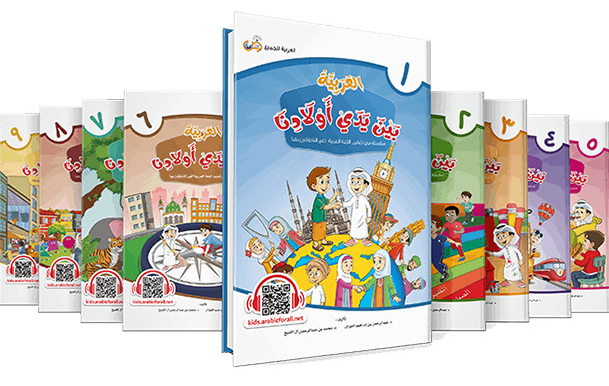
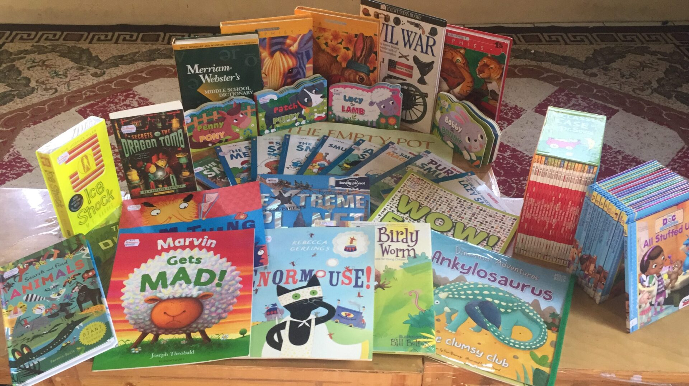
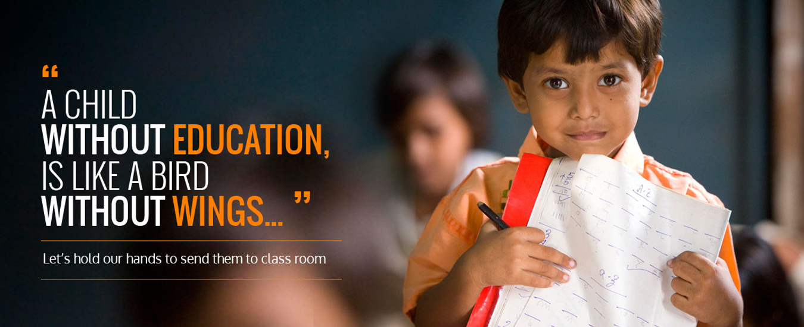
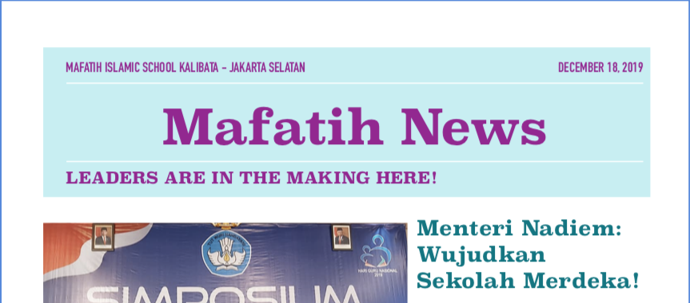

Ibu Dr. Erma Pawitasari, S.Kom, M.Ed
ITS Surabaya (S1), Boston University USA (S2), Program 1000 Ulama DDII (S3). Ex-Mutanafisun Academy USA, RnD Surya Institute, Dosen IIQ & UIKA, Pengurus FORDISI, Ijazah Tallaqy 30 Juz urutan ke-31.

Kabar Gembira! PPDB Tahun Ajaran 2027/2028 telah dibuka untuk jenjang Elementary Level (Full-Day & Online School) dan Secondary Level (Online School) di bawah naungan Yayasan Generasi Aman Sentosa.
YAYASAN GENERASI AMAN SENTOSA merupakan yayasan yang menaungi Mafatih Islamic Elementary School Jakarta melalui pengesahan dari Menteri Hukum dan HAM Republik Indonesia Nomor AHU-0030526.AH.01.04 Tahun 2016. Memadukan pendidikan ala pesantren dengan standar internasional tanpa biaya selangit.

Mafatih Islamic School has been awarded with Level A national accreditation in 2022 — pengakuan resmi atas mutu kurikulum, tenaga pendidik, dan tata kelola sekolah.
Sumber Pendanaan Yayasan: ZIS pendiri, pengurus, & masyarakat; Program Orang Tua Asuh; biaya pendidikan wali murid; kerja sama Pemda DKI (Puskesmas Kalibata, bus sekolah); serta BOP & BOS.
Kurikulum mandiri yang menjawab kritik terhadap pembelajaran teoritis—membentuk akhlak aplikatif, life skills, dan kesiapan hidup nyata.

Target hafalan 3 juz mutqin (muraja'ah harian & sertifikasi Al-Qur'an), emir harian/ketua kelas, imam shalat bergantian, Story Time, English & Arabic Club, debat kelas 5–6, hingga bazar wirausaha & outdoor class.
Didukung pengajar lulusan USA, LIPIA, Gontor, UI, ITS, IPB, UNPAD, UNJ, UIN, UNIMED, serta pengawasan Tahfizh bersanad (Ust. Dihya Ramadhan & Ust. Firdamansyah).
ITS Surabaya (S1), Boston University USA (S2), Program 1000 Ulama DDII (S3). Ex-Mutanafisun Academy USA, RnD Surya Institute, Dosen IIQ & UIKA, Pengurus FORDISI, Ijazah Tallaqy 30 Juz urutan ke-31.
Alumnus IPB, bergabung sejak tahun pertama Mafatih. Memegang ijazah sanad bacaan Al-Qur'an bersanad dari Rasulullah SAW urutan ke-31.
Psikolog klinis anak (bergabung TA 2023/2024). Juga praktik di RS Muhammadiyah Jakarta, Klinik Kancil Tebet, dan sekolah internasional.
Alumnus Kimia UI, mengelola administrasi & kerja sama vendor dengan kemampuan Bahasa Inggris setara native speaker (pernah tinggal di USA).
| Bulan | Tanggal | Agenda Resmi Mafatih Islamic School Jakarta |
|---|---|---|
| Juni–Juli 2026 | 29 Jun – 14 Jul | Raker guru dan persiapan KBM |
| Juli 2026 | 15–16 & 17 Jul | MPLS Khusus Siswa Baru (15–16) & MPLS Kelas 1–6 (17) · Hari Pertama Sekolah (20 Jul) |
| Agustus 2026 | 15, 17–18, 24, 25 | Pertemuan Ortu & Laporan Online (15) · Kemerdekaan RI (17–18) · Fieldtrip (24) · Maulid Nabi SAW (25) |
| September 2026 | 21–25 Sep | Penilaian Tengah Semester (PTS) & Simulasi TKA SMA (21–27 Sep) |
| Oktober 2026 | 5–18, 10, 28 Okt–8 Nov | Gladi Bersih TKA (5–18) · Pembagian LTS & Parenting (10) · Pelaksanaan TKA SMA (28 Okt–8 Nov) |
| November 2026 | 7, 27–28, 30 Nov–1 Des | Open House (7) · Mabit Khusus (27–28) · Penilaian Akhir Semester (PAS) Tahfizh (30 Nov–1 Des) |
| Desember 2026 | 2–17 & 18–24 Des | PAS Umum (2–8) · Classmeeting (9–14) · Sertifikasi Tahfizh & Bazaar Kuliner (15) · Pembagian Rapor (17) · Raker Guru (18–24) |
| Januari 2027 | 4 Jan 2027 | Hari pertama sekolah (jadwal normal) |
Untuk tahsin dan baca Al-Qur'an, Mafatih menggunakan Buku Tahsin As-Syafi'iyah.




Untuk keluarga kurang mampu (diutamakan berprestasi, tanpa menutup kemungkinan bagi yang belum). Pemohon menyetujui komitmen keluarga islami: shalat 5 waktu, ayah shalat berjamaah min. 1x/hari, ibu menutup aurat, dilarang merokok, vaksinasi wajib, serta bersedia kunjungan wawancara.

Buku Panduan Orang Tua (Panduan Umum, Keuangan, Akademik, FAQ) serta Booklet SD & Menengah.
Nomor VA: 1476 + 10 digit NIS ananda (invoice dari smartbilling@bpi.co.id). Jangan transfer biaya pendidikan ke BSI 9044490444.
Pemesanan seragam & buku dibuka 15–22 Mei 2026. Tidak diperkenankan input >1x dan pesanan tidak dapat dibatalkan.

06 Buletin Okt 2022 · Maret 2020 · 04 Des 2019 · 03 Sep 2019 · 02 Jul 2019 · 01 Agt 2018.
Pembaruan kegiatan pembinaan tahsin Al-Qur'an, dilanjutkan PTS Semester Ganjil (21–25 Sep 2026) dan Study Tour Animalium BRIN.
Publikasi rutin mading karya siswa-siswi Mafatih Islamic School Kalibata bersama kategori Press Release, Teachers Diary, & Video Siswa.
Kumpulan cerpen kreatif berbahasa Inggris karya siswa Mafatih (Best Friend Forever, Apocalyptic Nightmare, dll.).
“International Islamic education does not have to be expensive.” Benefit pengajar: gaji kompetitif, English Training langsung bersama Dr. Erma Pawitasari M.Ed (Boston Univ.), ACTIVE badminton mingguan, serta Tahsin bersama Ust. Muhammad Rizki, Lc (LIPIA & Sofwa Univ. Egypt).
“Alhamdulillah apa yang kami cari dari sebuah Sekolah Dasar untuk anak kami Ghafi, kami temukan di Mafatih Islamic School Kalibata.”
— Orang tua Ghafi Benzema Ragafala“Selama hampir 7 tahun berinteraksi dengan Mafatih dan tahun ini anak ke-3 saya insyaAllah masuk kelas 1, alhamdulillah.”
— Orang tua Fatih, Faza, dan Faiz“Mafatih Islamic School adalah sekolah yang bisa membentuk karakter anak berakhlakul karimah, mandiri, kreatif, dan menjadi generasi Qur'ani.”
— Orang tua Haneefa dan Hilya · (Serta testimoni Orang tua Kholid)